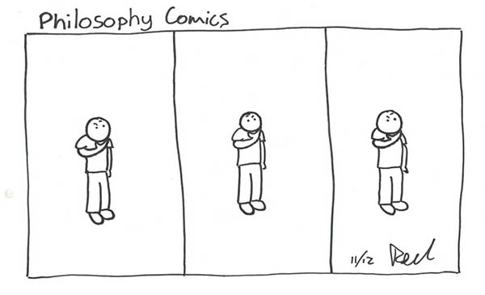

Ed Tovell keeps a blog called "I Review Literally Anything", which applies the stars-out-of-five critique format to all manner of things, both usual and un. It can be found at ireviewliterallyanything.wordpress.com.
There is also a comic strip that Ed Tovell draws, but you can't get to it from here because it is NSFW and a bit dark. It has been printed in Cheesegrater magazine and is also the subject of an interactive fiction he wrote in Twine. If for some reason you want to see more, you can ask Ed Tovell for the link.
Ed Tovell is as surprised as you are that some of his Edinburgh Fringe reviews appeared in the August 2009 edition of Scotsgay Magazine. You can try and find them in here.